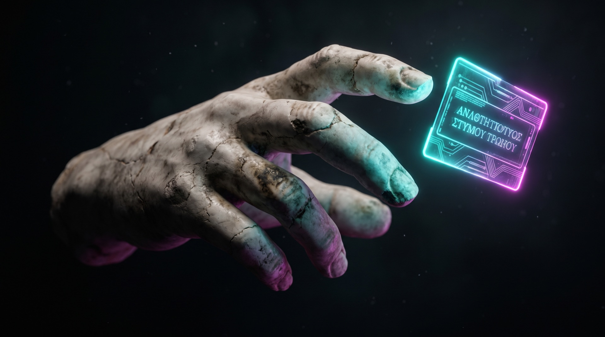
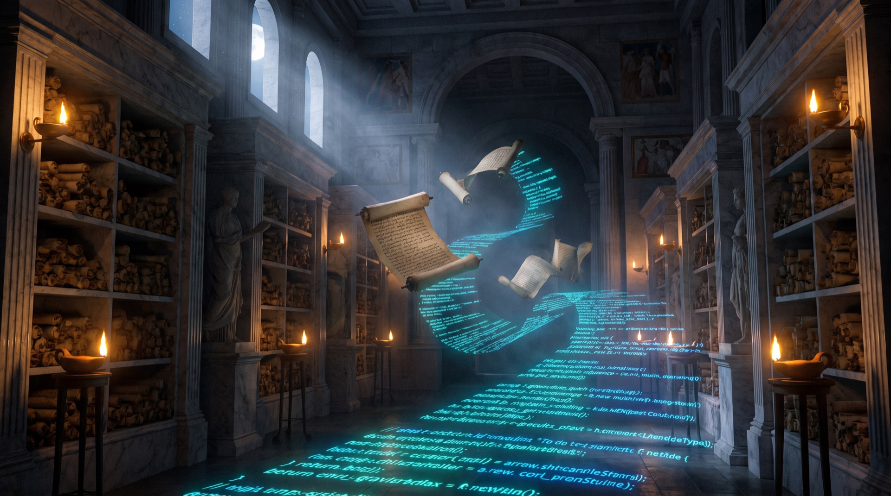
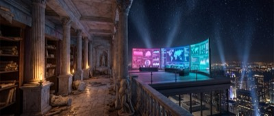
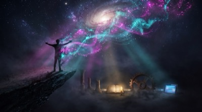
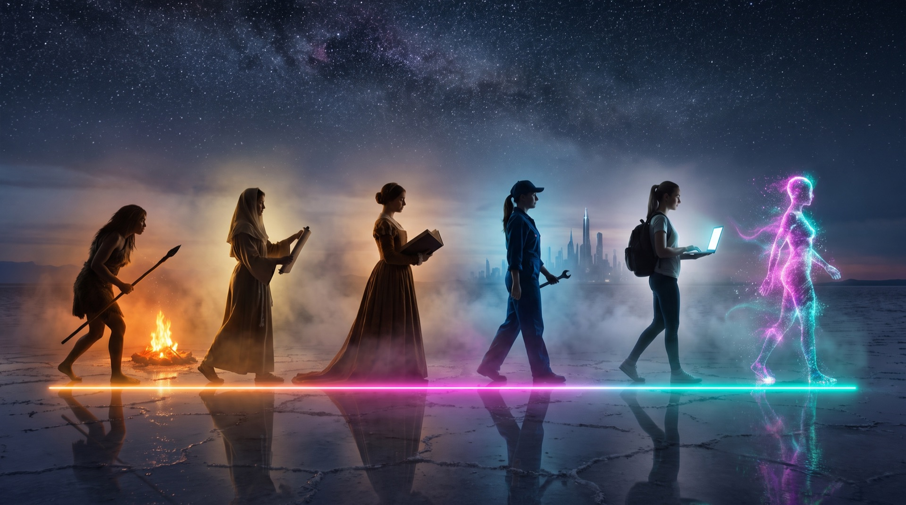
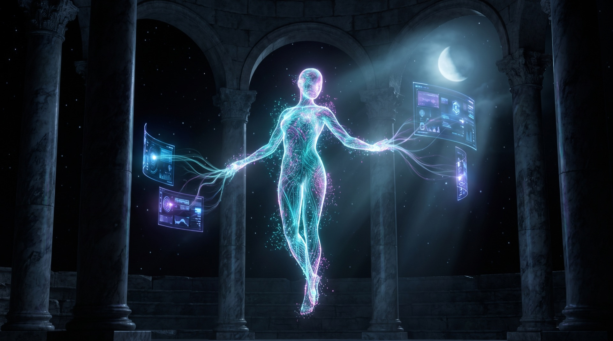

Vibe Coding
Agora'dan Agent'a
Kod yazma. İste.
Yazılımın yeni dili Türkçe kadar doğal.

Kavram · Niyet
Parşömene yazılan her satır bir düşünceydi.
Şimdi her düşünce, çalışan bir yazılım.
Vibe coding, kod yazmadan yazılım üretmenin adı: sen niyetini anlatırsın, yapay zekâ inşa eder. İskenderiye'nin kâtipleri gibi ezberlemezsin — İskenderiye'nin filozofları gibi yönetirsin.
Program · 5 Saat
Beş parşömen.
Beş güç.
01Vibe Coding Temelleri
60 dk
02Claude Code ile İlk Prompt
60 dk
03Kendi AI Agent'ını Kur
60 dk

04Canlı Uygulama
60 dk

05Yayınla ve İzle — GitHub + Dashboard
60 dk
Günün Çıktısı
Kendi dijital ekibin
+ kontrol panelin.

Gerçek Örnek · Canlı Kanıt
Analog PATRON,
Dijital EKİP.
Bu sayfayı yapan, raporları yazan, reklamları planlayan ekip tam olarak bu. Eğitimde aynı yöntemle kendi ekibini kuruyorsun.

Manifesto
Analog Patron,
Dijital Ekip.
Bilgelik, sezgi, karar ve vicdan sende — sorular hâlâ İlk Çağ'daki kadar insani. Yazan, tarayan, raporlayan agent'lar ise yorulmadan, gece gündüz, senin yönettiğin ritimde üretir. İnsan kaldıkça teknoloji anlam kazanır.
Baştan Bak